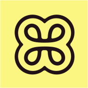

I’m a Product and UX Designer who helps organisations create meaningful products and services through thoughtful research, strategy, and design. I bring a user-centred approach to every stage of the process — crafting digital solutions that meet real needs while helping businesses thrive.
My experience spans the full spectrum of design. I’ve worked as a dedicated product designer on SaaS platforms, a multidisciplinary digital designer across brand, motion, and interface design, and even as a project manager and product owner guiding delivery teams from concept to launch.
This variety has shaped how I think and work — adaptable, curious, and comfortable in fast-paced environments where collaboration is key. I’m at my best solving complex problems alongside great people, turning challenges into opportunities to make technology more human.

End-to-end product design and design technology for Heidi’s AI medical scribe; empowering clinicians to spend less time on administration and focus on valuable patient care.
Seconded into Heidi’s go-to-market team to lead the design of a major marketing website rebrand, whilst also replatforming from Webflow to Sanity.
The Heidi team's go-to freelance developer for complex, fast-turnaround Webflow builds.
Led design for the modernisation of Kiwibank's web digital banking platform, with ownership of the web design system and oversight of UI quality and consistency across product teams.
Worked as an embedded design partner for leading Australasian SaaS businesses, helping teams improve their products through experience design, research and design systems.
Continued design leadership within Modica's Applications product squad, while establishing a cross-functional UI/UX Guild to improve collaboration and consistency across the organisation.
Led the Applications product squad, taking ownership of product direction, prioritisation and delivery across Modica's messaging solutions, alongside ongoing UI/UX design responsibilities.
Worked in Modica’s Applications product squad to improve the experience of its global messaging platform, introducing foundational design and research practices.
Combined UX/UI design with project delivery responsibilities, acting as a key link between clients, stakeholders and the delivery team across web and mobile projects.
Designed digital experiences and creative work across a diverse range of in-house and agency projects.
Design Tools
Figma · Adobe Creative Suite · Jitter · Affinity
Analytics & Testing
Google Analytics · HotJar · PostHog · Maze · Qualtrics · Optimal · Askable
Development
HTML · CSS / SASS · Tailwind · Git · Webflow · Cursor · Claude Code